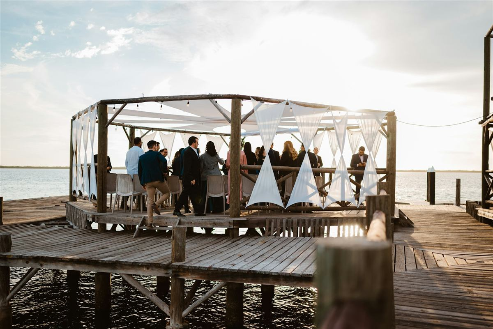
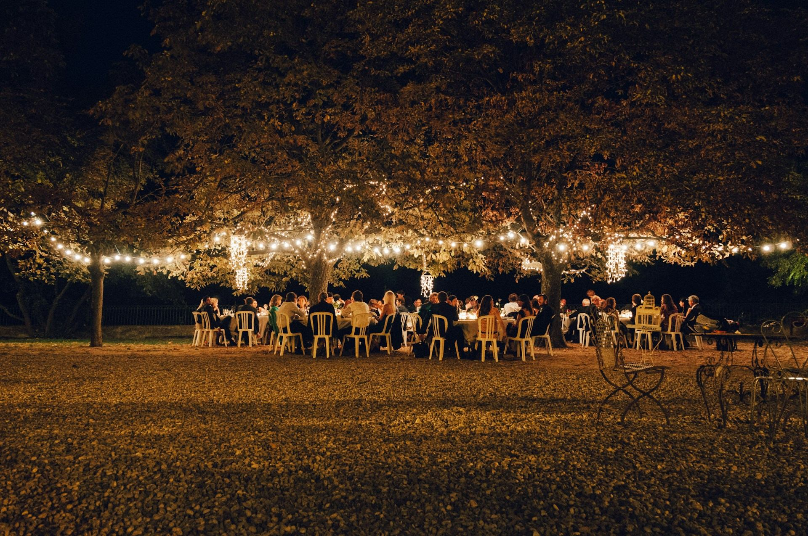
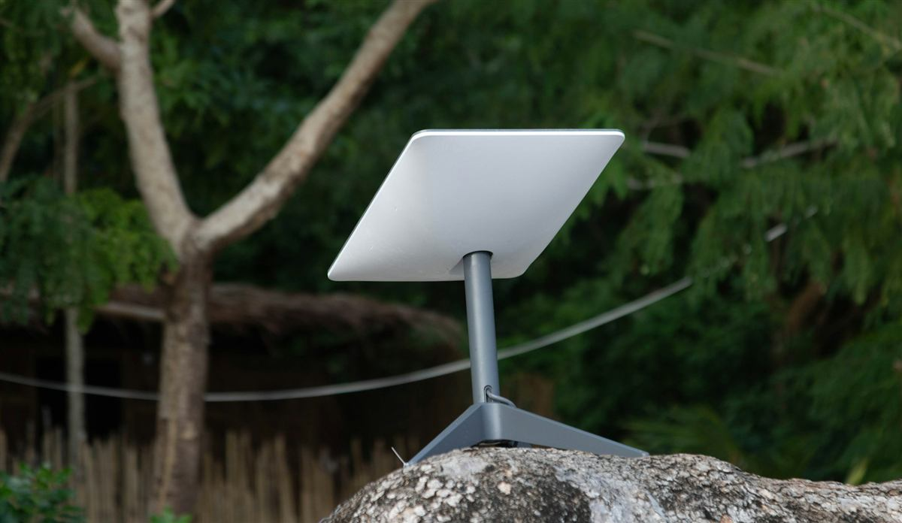
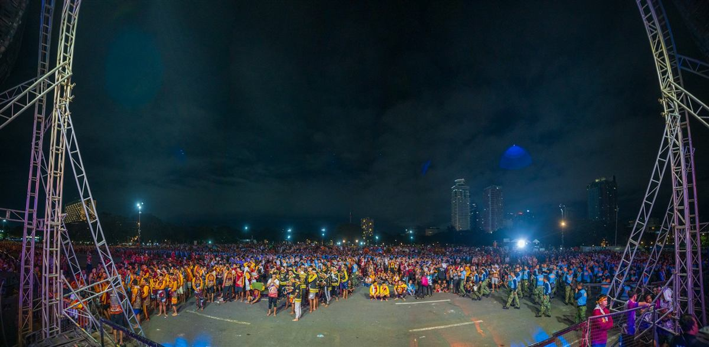
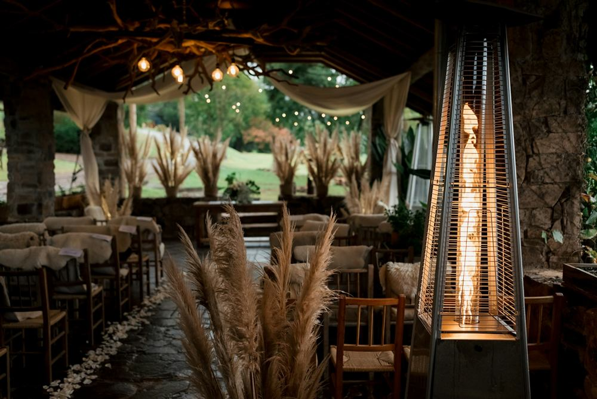
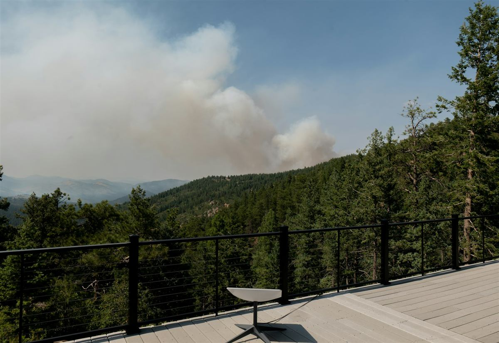
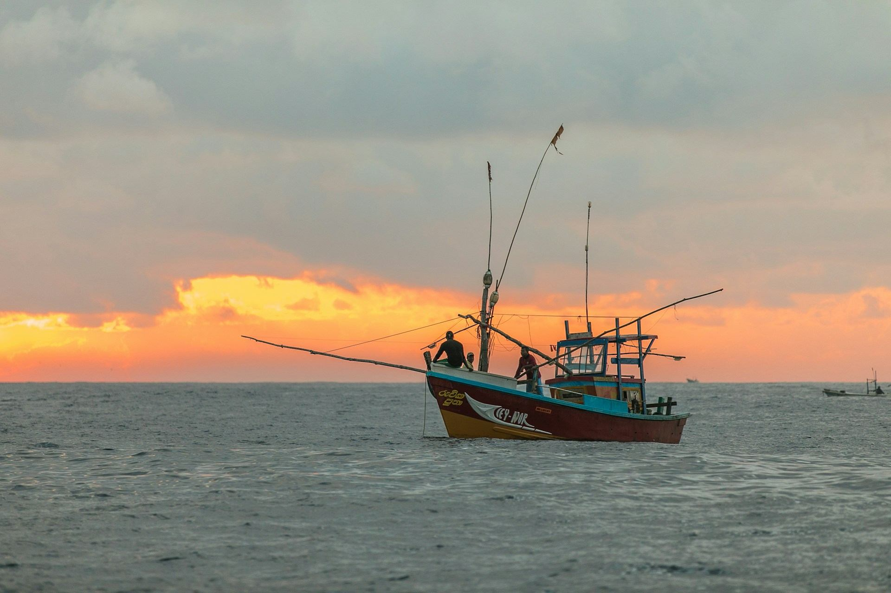
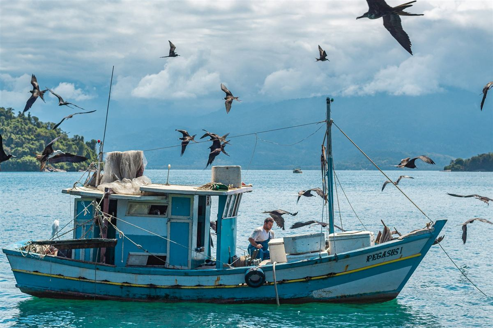

Casamentos e festas
Convidados postando fotos, telão com stories e música por streaming sem travar.

Locação de Wi-Fi via satélite para festas, eventos e pescarias. A gente instala, configura e acompanha do início ao fim.
Sobre nós
A Meu WiFi leva internet de alta velocidade para eventos e lugares afastados usando antenas de satélite de órbita baixa. Não depende de cabo, de torre de celular nem de rede do local.
Você recebe uma rede Wi-Fi própria, com nome e senha do seu evento, pronta para pagamento no cartão, transmissão ao vivo e convidados conectados.

Data, local e quantas pessoas vão se conectar.
Antena, roteador e teste de velocidade antes de começar.
Suporte durante o evento e retirada ao final.

Convidados postando fotos, telão com stories e música por streaming sem travar.

Rede para bilheteria, credenciamento e transmissão ao vivo.

Maquininhas de cartão, sistemas de venda e palestras online funcionando.

Fazenda, praia, serra ou canteiro de obra. Se dá para ver o céu, dá para ter internet.

Wi-Fi para pesca
Antena de satélite a bordo para pescarias de um dia ou de vários. Acompanhe o tempo, fale com a família e mande as fotos do peixe na hora.
Wi-Fi no meu barco
Radar, vento e ondas atualizados durante toda a pescaria.
Fale com quem ficou em terra por WhatsApp, mesmo longe da costa.
Canal de comunicação extra para qualquer imprevisto no mar.
Fixamos a antena, ligamos na energia da embarcação e testamos antes de sair.
“Casamento em sítio sem sinal nenhum. Com o Wi-Fi deles, a transmissão para a família de fora rodou a noite inteira.”
“Levei a antena numa pescaria de três dias. Acompanhei o tempo e falei com minha esposa todo dia.”
“As maquininhas da feira pararam de falhar. Vendemos muito mais no fim de semana.”
“Atenderam de madrugada para confirmar a instalação. Pontuais, educados e a internet voou.”
Não achou sua dúvida? Chame no WhatsApp, atendemos 24 horas.
Sim. A conexão vem direto do satélite, então só precisa de céu aberto onde a antena for instalada. Não depende de torre ou cabo.
Depende do tamanho do evento. Dimensionamos antenas e roteadores pelo número de convidados e pelo uso (pagamentos, transmissão, redes sociais).
O ideal é reservar assim que tiver a data. Para eventos de última hora, chame no WhatsApp que verificamos a disponibilidade na hora.
Instalamos a antena no barco, ligamos na energia da embarcação e testamos antes da saída. Você usa durante a pescaria e devolve no retorno.
Sim, a antena e o roteador precisam de energia. Em locais sem tomada, combinamos uma alternativa no orçamento.
Pode. Configuramos a rede com o nome do seu evento ou empresa e a senha que preferir.